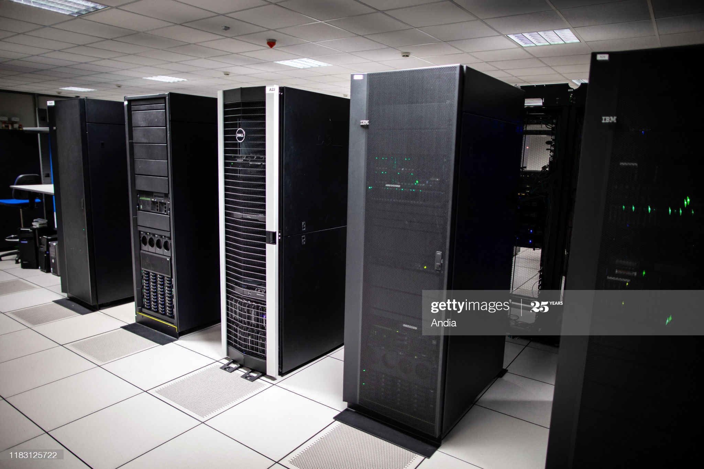

A data center is a physical facility that organizations use to house their critical applications and data. On this page we will explain what a data center is and how they are related to the cloud system. On this page we will answer questions such as:
Why are data centers important?
How do data centers operate?
What are data centers made of
A data center is a facility that centralize the shared IT operations and equipment used for storing, processing, and disseminating data and applications. Since it stores an organizations most critical assets, data centers are crucial to the continuity of daily operations. Consequently, the security and reliability of data centers is everything since the information they hold will be the top priority of an organization.
The role of the data centers at business includes providing such services,
1. Data storage, management, backup, and recovery
2. Productivity applications such as email.
3. High-volume e-commerce transactions
4. Powering the online gaming communities.
5. Big data, machine learning and AI
There are more than 7 million data centers worldwide. Every business and government build and maintain their own data center or have access to someone else’s.
Data center design include routers, switches, firewalls, storage systems, servers, and application delivery controllers. These components store and manage business critical data and applications. Data center security is critical in data center design.
Data center security provide:
Network infrastructure
Connects servers, data center services, storage, and external connectivity.
Storage infrastructure
Storage systems are used to hold information which is a valuable commodity which is crucial to data centers.Computing resources
Applications are the engines of a data center. Servers provide the processing, memory, local storage, and network connectivity that drive applications.

Data center services are typically deployed to protect the performance and integrity of the core data center components.
Network security appliances.
These include firewall and intrusion protection to safeguard the data center.
Application delivery assurance.
To maintain application performance, these mechanisms provide application resiliency and availability via automatic failover and load balancing.
A data center houses servers and/or data storage for an organization. This includes the hardware itself, the space in which it is housed, the power systems and backup systems, environmental controls, and anything else needed to keep those servers running. A data center can be a single server or complex with hundreds of servers on racks.
While cloud companies have their own data centers, organizations often have their own data centers as well, which are referred to as on-premises or on-prem for short. When most people talk about their data centers, the implication is that they are talking about on-prem data centers. Data centers are owned and managed by the organization in question, for their own internal uses. With the cloud, data are stored, and applications run off-premises and accessed remotely through the internet.
Ultimately, to make the decision to use a type of cloud or traditional data center depends on the degree of privacy and control needed. The pressure to curb costs and increase transparency also exists.
Youtube Video on the Data Center
https://youtu.be/kfvbCggY_nI